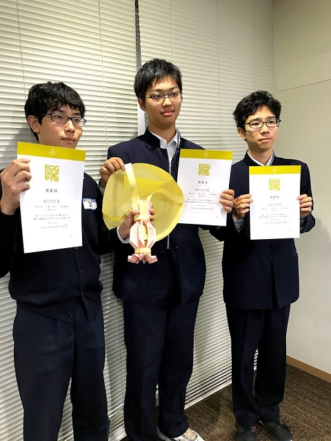

エッグドロップ
概要
エッグドロップとは、紙で容器を作り、卵を入れて高いところから落下させる実験のことです。
この容器のことをプロテクターと呼び、卵が割れないように形を工夫します。
想像・設計・製作と、幅広い分野の力が求められます。

ルール
物理部で普段使っているものです。
材料・道具
A4のコピー用紙2枚を、のりで貼り付けて作ります。
使ってよい道具は、はさみ・定規・鉛筆・シャーペンのみです。

投下
飛散防止のビニール袋に包んだ鶏卵を1つ入れ、5mくらいの高さから投下します。
着地後に割れていなければ成功です。
残念ながら割れてしまうこともあるので、地面には新聞紙を敷いておきます。
設計
例としてあげますが、実際にはこれらを組み合わせてバランスを取りつつ作ります。
衝撃吸収型
卵の下にバネやクッションとなる形の紙を入れ、着地の衝撃を吸収させます。
この型では、クッションを下にしたまま落とすことがカギになります。
減速型
パラシュートなどを使って減速し、衝撃を減らす構造です。
この型では、パラシュートに多くの紙を使ってしまうことと、横に流れてしまうことが多いことが課題なので、少ない紙で垂直に落とすことがカギになります。
大会
準備・片付けに手間がかかるので、まとまった人数で実験します。
部内大会
活動時間の長い土曜日の午後などを利用し、毎学期1～2回開催しています。
後片付けの時間もあり、製作時間は長くても2時間ほどになってしまいます。
エッグドロップ甲子園
毎年秋に東京大学で開催されている、高校生向けの大会です。
3人でチームを組んで、1つのプロテクターを作ります。
部内のルールより紙を多く使えますが、使った紙の量に応じてスコアが下がってしまうルールもあります。
2019年度には、物理部の1チームが東京大学賞を受賞しました。
